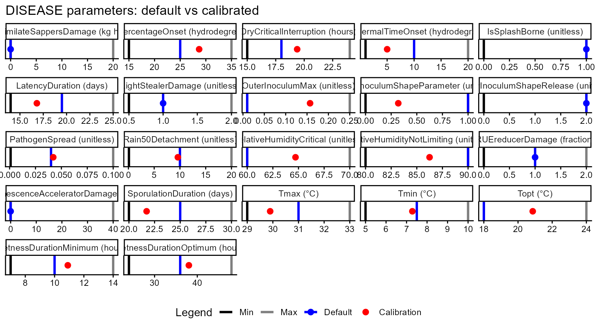

🎯 What is FraNchEstYN?
FraNchEstYN is a process-based framework for simulating and calibrating crop–disease–fungicide dynamics. In five minutes you will:
- Load the bundled Indiana dataset.
- Configure crop and disease parameters.
- Run a single calibration call.
- Inspect the calibrated outputs.
The full case studies (Egypt, Ethiopia, Brazil, Indiana) show how to scale this workflow to multi-site, multi-variety, and multi-season analyses.
📥 Load bundled data
FraNchEstYN ships three Indiana datasets covering Septoria tritici blotch observations (19 seasons, harvested 1973–1991) from Shaner & Buechley (1995):
data(weather_indiana) # daily weather (NASA POWER)
data(reference_indiana) # disease severity observations
data(management_indiana) # sowing and management metadata| site | year | month | day | tx | tn | p | rad |
|---|---|---|---|---|---|---|---|
| Indiana | 1972 | 1 | 1 | 6.623 | -2.085 | 0.000000 | 7.45 |
| Indiana | 1972 | 1 | 2 | 2.450 | -3.212 | 3.313559 | 9.44 |
| Indiana | 1972 | 1 | 3 | 5.360 | -2.956 | 0.000000 | 8.31 |
| Indiana | 1972 | 1 | 4 | 1.002 | -4.786 | 5.407608 | 2.37 |
⚙️ Set up parameters
Start from the built-in wheat and Septoria defaults. We disable parameters unrelated to light interception and focus calibration on canopy and early epidemic dynamics.
# --- Crop parameters: wheat defaults, enable only canopy-related calibration ---
thisCropParam <- cropParameters$wheat
thisCropParam <- set_calibration_flags(
thisCropParam,
disable = c("PartitioningMaximum", "TbaseCrop", "TmaxCrop", "ToptCrop",
"FloweringStart", "RadiationUseEfficiency")
)
# --- Disease parameters: Septoria defaults, disable yield-loss pathways ---
thisDiseaseParam <- diseaseParameters$septoria
thisDiseaseParam <- set_calibration_flags(
thisDiseaseParam,
disable = c("RUEreducerDamage", "LightStealerDamage",
"SenescenceAcceleratorDamage", "AssimilateSappersDamage")
)🔧 Run the model
A single call to franchestyn() calibrates both the crop
and disease sub-models simultaneously. Here we use a short run (100
iterations) for speed; increase to 500–1000 for publication-quality
fits.
df <- franchestyn(
weather_data = weather_indiana,
management_data = management_indiana,
reference_data = reference_indiana,
cropParameters = thisCropParam,
diseaseParameters = thisDiseaseParam,
calibration = "all",
start_end = c(1971, 1992),
franchy_message = FALSE,
iterations = 100
)📊 Outputs
Calibrated parameters
Calibrated values (🔴 red dot) vs default (🔵 blue line) and allowable range (grey bar):
df$diagnostics$calibration$plots$disease
Performance metrics
| GrowingSeason | n | Bias | RMSE | r | R2 | NSE |
|---|---|---|---|---|---|---|
| 1972 | 8 | -0.097 | 0.142 | 0.940 | 0.884 | 0.781 |
| 1973 | 8 | 0.030 | 0.215 | 0.862 | 0.743 | 0.617 |
| 1974 | 6 | -0.151 | 0.173 | 0.983 | 0.965 | 0.302 |
| 1975 | 9 | 0.034 | 0.197 | 0.834 | 0.696 | 0.564 |
| 1976 | 3 | -0.031 | 0.204 | 0.843 | 0.711 | 0.151 |
| 1977 | 5 | -0.016 | 0.080 | 0.893 | 0.797 | 0.595 |
| 1978 | 6 | 0.129 | 0.220 | 0.725 | 0.525 | 0.227 |
| 1979 | 6 | 0.004 | 0.116 | 0.940 | 0.883 | 0.850 |
| 1980 | 8 | -0.175 | 0.192 | 0.970 | 0.942 | 0.512 |
| 1981 | 4 | 0.093 | 0.168 | 0.915 | 0.837 | 0.603 |
| 1982 | 7 | -0.012 | 0.042 | 0.988 | 0.975 | 0.969 |
| 1983 | 4 | 0.049 | 0.065 | 0.974 | 0.949 | 0.706 |
| 1984 | 2 | 0.151 | 0.175 | 1.000 | 1.000 | -9.432 |
| 1985 | 5 | 0.025 | 0.244 | 0.850 | 0.723 | 0.498 |
| 1986 | 5 | -0.268 | 0.345 | 0.807 | 0.651 | -0.896 |
| 1987 | 4 | -0.023 | 0.029 | 0.945 | 0.893 | 0.379 |
| 1988 | 8 | -0.107 | 0.168 | 0.983 | 0.967 | 0.711 |
| 1989 | 7 | -0.153 | 0.170 | 0.961 | 0.924 | 0.587 |
| 1990 | 5 | 0.066 | 0.242 | 0.878 | 0.771 | 0.364 |
🚀 Next steps
| Goal | Where to look |
|---|---|
| Multi-variety calibration | Egypt case study |
| Fungicide scheduling | Ethiopia case study |
| Multi-season validation | Brazil case study |
| Full calibration on 19 seasons and LOOCV | Indiana case study |
| Couple with external crop model |
?franchestyn → cropModel_data
argument |
| AI-generated narrative summaries |
apikey + franchy_message = TRUE
|